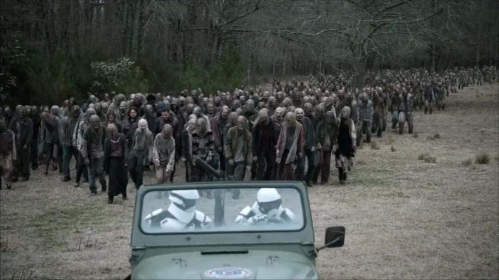

Know Your Enemy
THE
WALKERS
THEY NEVER SLEEP.
They were people once. Now they are hunger given form — patient, relentless, and utterly indifferent to everything you've built. Understanding them is the first rule of survival.

Know Your Enemy
They were people once. Now they are hunger given form — patient, relentless, and utterly indifferent to everything you've built. Understanding them is the first rule of survival.
Not all of them are the same. Learn the difference. It might buy you one more day.
Solitary walkers drifting with no fixed territory. Attracted to sound and movement. Individually manageable — in numbers, catastrophic.
Threat Level — Moderate
A mass migration of hundreds or thousands. No one leads them — they follow sound and each other. A herd can swallow a fortified town whole and leave nothing standing.
Threat Level — Catastrophic
Recently deceased. Still retaining some motor memory and physical strength. More unpredictable than long-dead walkers. Approach with extreme caution.
Threat Level — High
Stationary walkers that appear dead or dormant. Found in piles, under debris, in water. They wait. They don't know they're waiting. You'll find out the hard way if you're not careful.
Threat Level — Situational
Walkers that have accumulated debris, wire, riot gear, or other material that shields their skull. Standard blunt-force and blade techniques may fail. Requires adapted strategy.
Threat Level — High
Rare. Dangerous. Exhibits behaviors that should be impossible — coordinated movement, rudimentary problem solving, apparent awareness of obstacles. Do not engage alone.
Threat Level — Unknown
"They might look like people — they might have been people — but what's in there now is just dead weight that hasn't hit the ground yet."— Abraham Ford

These aren't suggestions. They are reasons people are still alive.
Panic is louder than you think. Noise draws more. Stay low, stay quiet, stay breathing.
Stab, crush, pierce — the body means nothing. The brain is the only thing keeping them moving.
They don't announce themselves. They don't care if you're sleeping. Always post a watch. Always.
There is no treatment. No cure. No heroic exception. A bite is a clock ticking down. Plan accordingly.